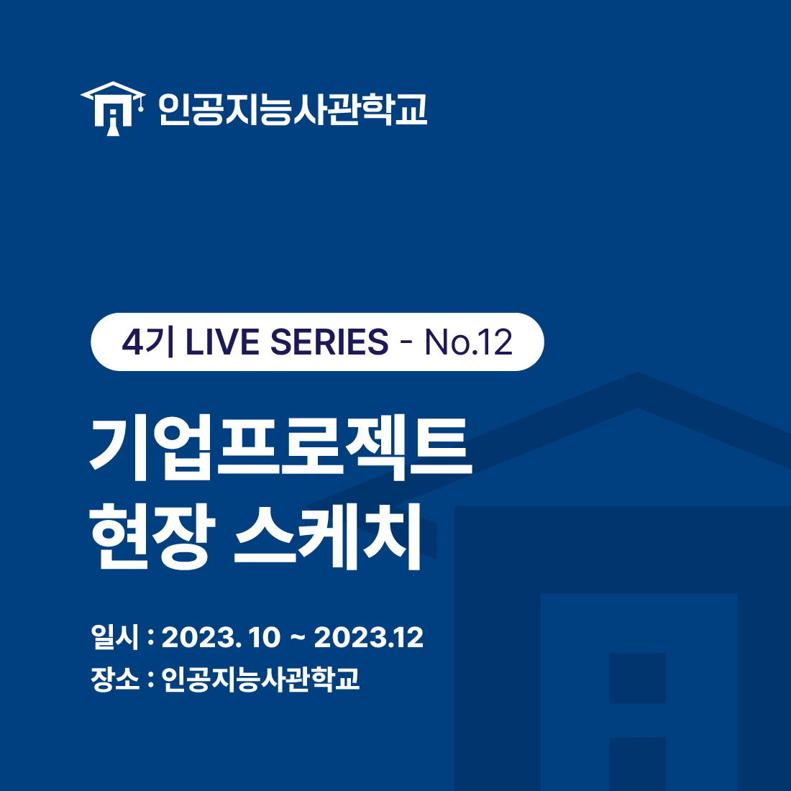
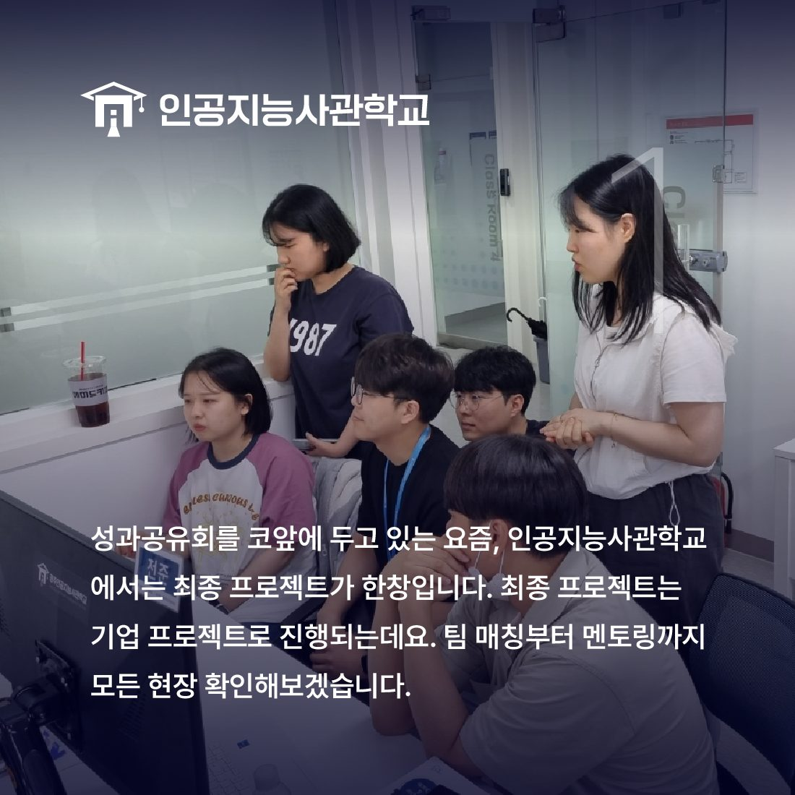
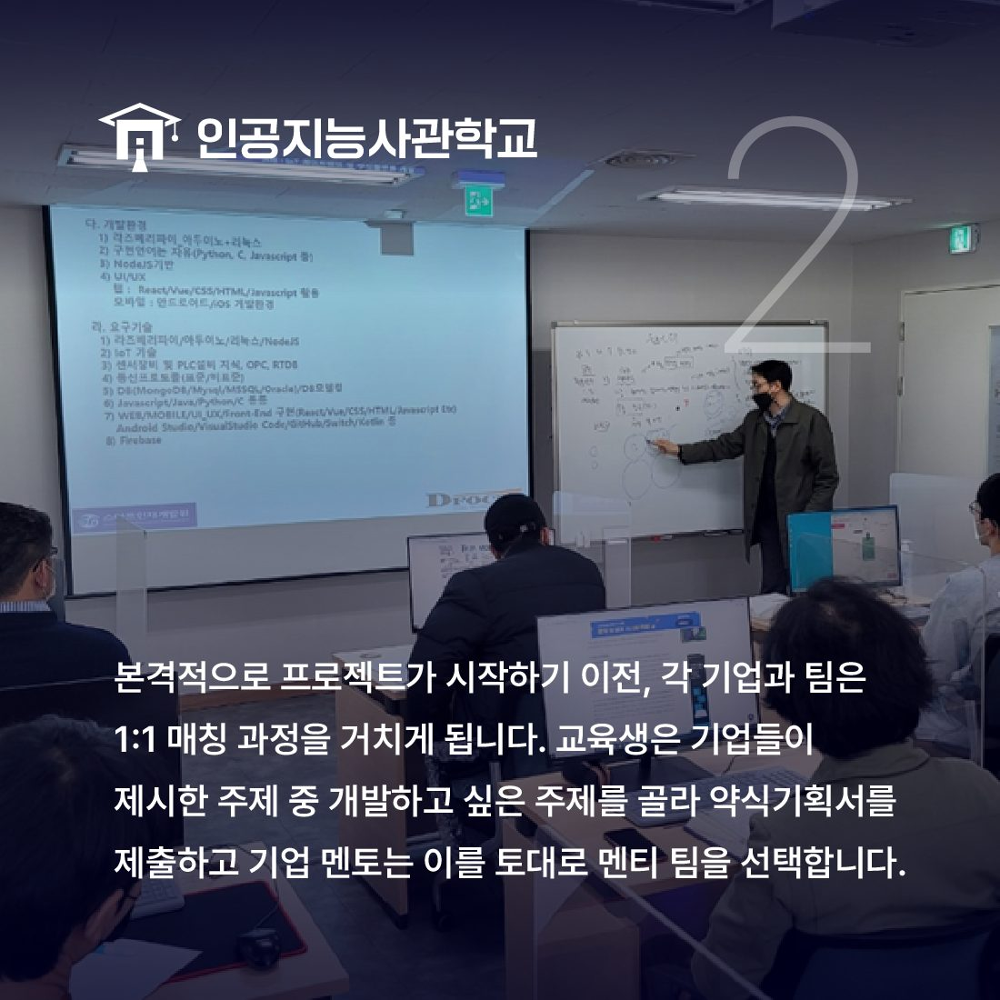
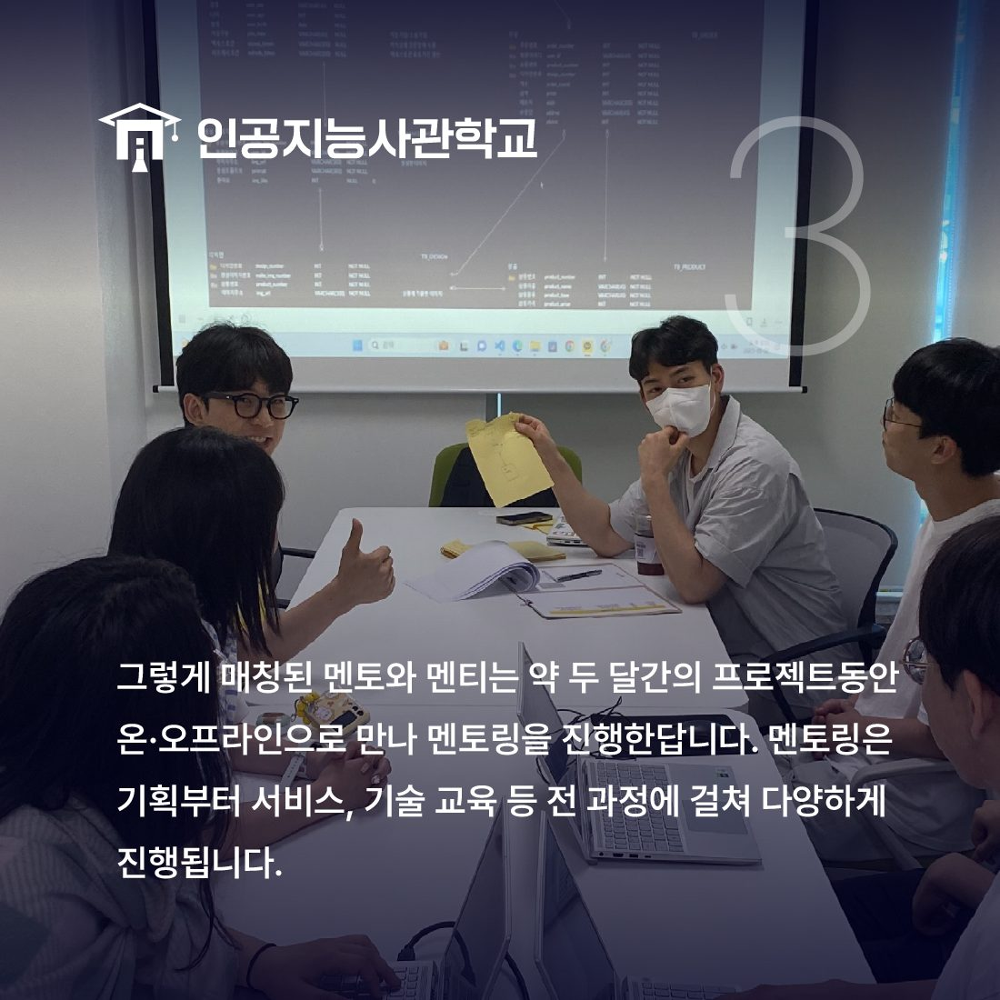
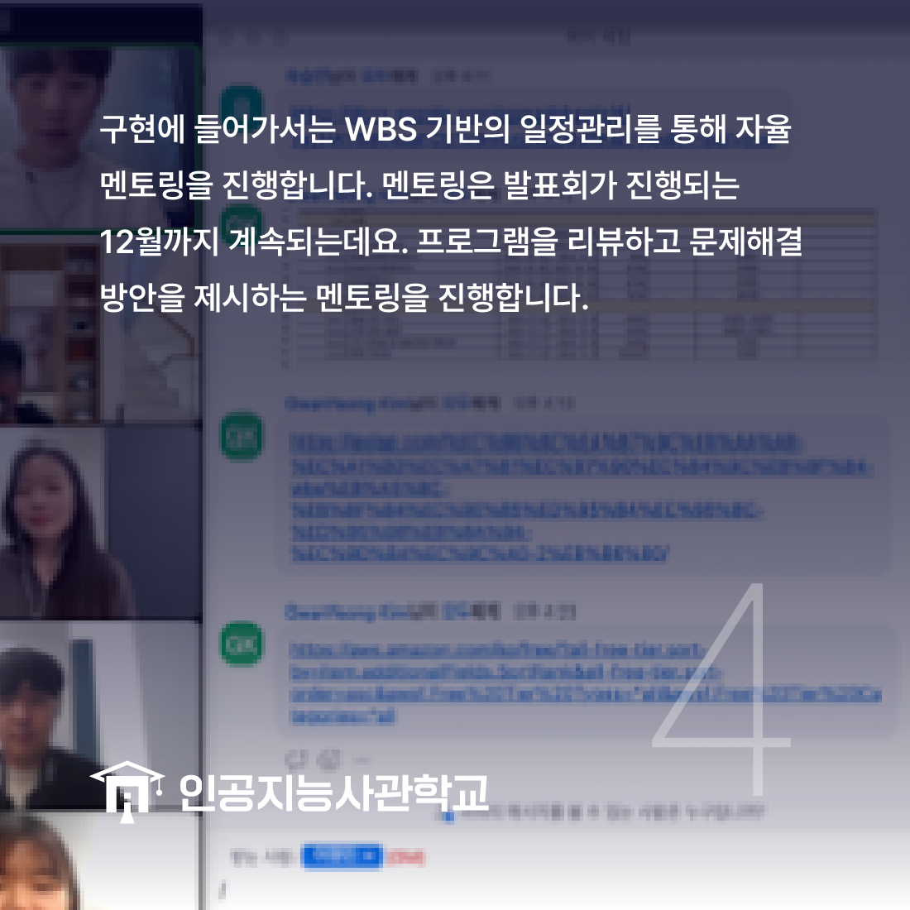
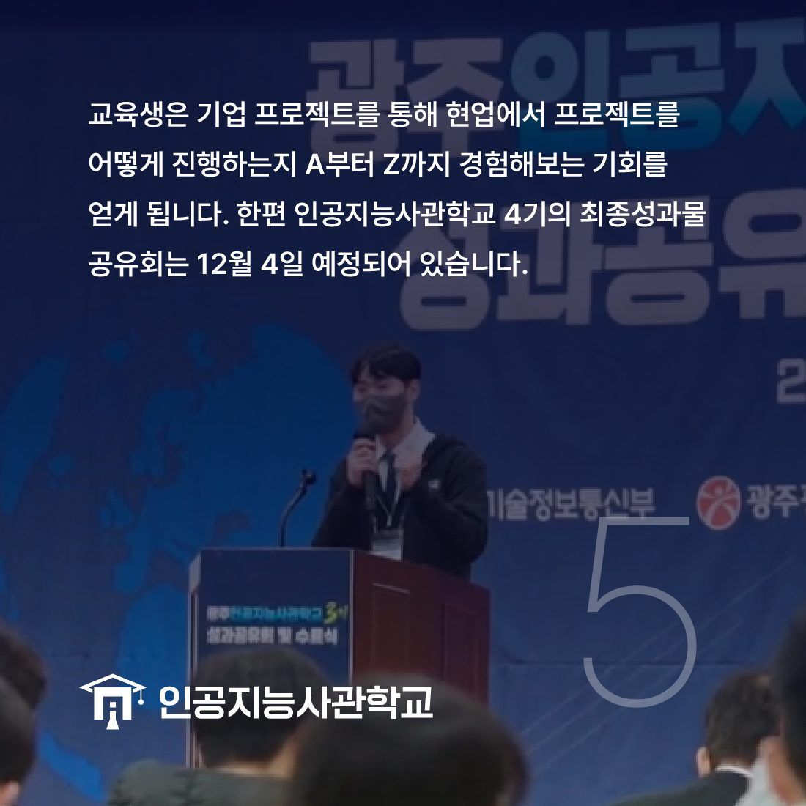

안녕하세요! 인공지능사관학교입니다. 😆

오늘은 지난 10월부터 시작한
최종 프로젝트에 대해 알아보려고 합니다!

12월 4일 최종 성과공유회를 앞두고
인공지능사관학교에서는 최종 프로젝트가 한창입니다!
인공지능사관학교의 최종 프로젝트는
기업 프로젝트로 진행되는데요.
팀 매칭부터 멘토링 과정까지 그 현장을 담아봤습니다😊

본격적으로 프로젝트에 들어가기 전
각 기업과 교육생으로 이루어진 팀은
1:1 매칭 과정을 거치게 되는데요.
각 기업에서 프로젝트 주제를 주고,
팀은 원하는 주제를 선택하여 약식 기획서를 작성합니다.
약식 기획서를 가지고 멘토 기업에게 짧은 PT를 하고
멘토는 이를 토대로 멘티를 선택합니다.🤝
그렇게 매칭된 멘토와 멘티는 10월부터 12월까지
함께 프로젝트를 진행합니다.

온·오프라인으로 진행되는 멘토링은
기획부터 설계, 구현 등 프로젝트 전 과정에 진행됩니다.
기업별 도메인에 따른 특화 기술을 공부📝하고
IT 분야의 다양한 인사이트💡를 얻는 시간을 가집니다.

구현에 들어가서는 WBS를 기반으로 일정을 관리하고
프로그램의 오류 등을 찾고 문제 해결 방안을 제시해주는 방식으로
멘토링이 진행됩니다.
개발이 끝날 때까지 계속되는 멘토와 멘티의 열정!🔥

인공지능사관학교에서 기업 프로젝트를 하는 이유는 무엇일까요?
교육생은 현업에서 시행되는 프로젝트 수행방식에 대해 경험할 수 있고
기업은 자신들의 기업에 맞는 인재를 채용할 수 있는 기회를 얻을 수 있기 때문입니다!

지난 6월부터 쉼없이 달려온 인공지능사관학교!
그 마무리가 코 앞입니다.
12월 4~5일
최종 성과공유회와 왕중왕전, 그리고 수료식이 진행될 예정이니
많은 관심 바랍니다!